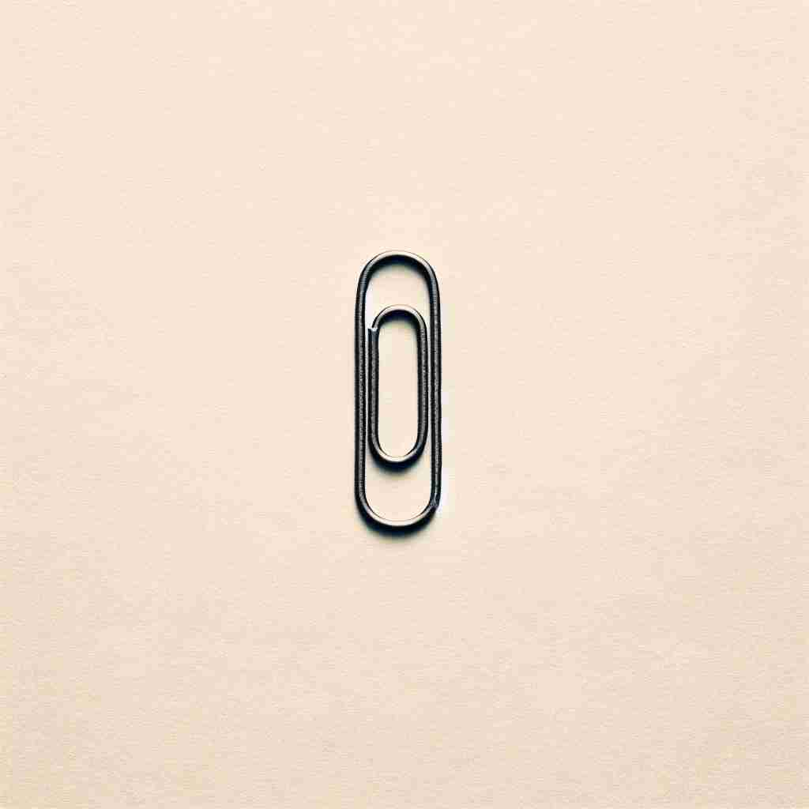

💬 The broom is collecting trivial pieces of trash from the road.

💬 The paper clip is just a trivial item on the desk.

💬 The desk is filled with trivial details like paperclips and sticky notes.
🔈 ['trɪvɪəl]
🗝️ adj. of very little importance or value
🖼️ 在一个忙碌的办公室里，两位同事正在讨论一个项目的优先级。其中一位说：'我们应该专注在主要任务上，把这些琐碎(trivial)的事情先放一边。' 他边说边指向一堆无关紧要的文件，向对方强调其不重要的性质。
🔍 想象'trivial'是一个小小的、轻飘飘的气球。它代表着不重要、普通、容易的概念。无论是日常生活中的小事，还是数学中的简单情况，都可以用这个轻飘飘的气球来联想。这个核心概念贯穿了'trivial'的各种用法，帮助你更容易记住和理解它的多重含义。
💬 The broom is collecting trivial pieces of trash from the road.
💬 The paper clip is just a trivial item on the desk.
💬 The desk is filled with trivial details like paperclips and sticky notes.
🌳 由词根 'tri-'（三）和词根 'via'（路）组合而成，原意指的是古罗马的三岔路口，那里通常有很多琐碎的谈话。因此，'trivial' 的含义是琐碎的、不重要的。
💡 可以联想为“三岔路口的事情”，即在三岔路口人们谈论的小事，因而不重要。这帮助记住 'trivial' 的含义是琐碎的。
🗝️ adj. commonplace, ordinary
🖼️ 在一个阳光明媚的早晨，公园里的人们三三两两地散步。一位老人微笑着说：'这是一段再普通不过(trivial)的日子，但我们常常忽略这种日常的美好。' 他透过眼前的树影，看到了平凡生活中的小乐趣。
💬 The novel was filled with trivial details of everyday life.
❓ 不重要的事物通常也很普通
🗝️ adj. easy to solve or do
🖼️ 在一个热闹的教室里，数学老师正在讲解一道看似复杂的题目。她微笑地说：'其实这是一个非常简单(trivial)的问题，只要把它分解就会轻松解决。' 学生们豁然开朗地看着黑板上的解题步骤。
💬 For a mathematician, this problem is trivial.
❓ 不重要的事情通常也很容易处理
🗝️ adj. (in mathematics) relating to the simplest case
🖼️ 数学讲座中，教授正在讲解拓扑学的基本概念。他说：'在这个例子中，我们关注的是最简单的情形，或称为平凡(trivial)解。' 学生们点头表示理解，将这一基本概念牢记于心。
💬 The equation has a trivial solution when x equals zero.
❓ 在数学中，最简单的情况往往被视为不重要